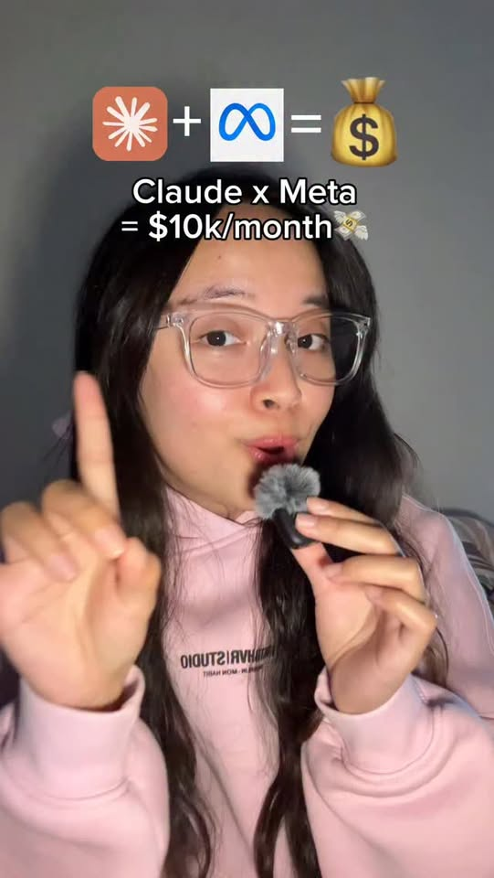
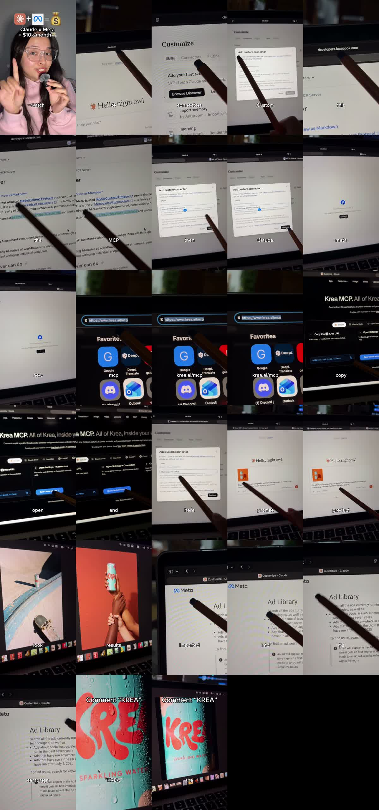
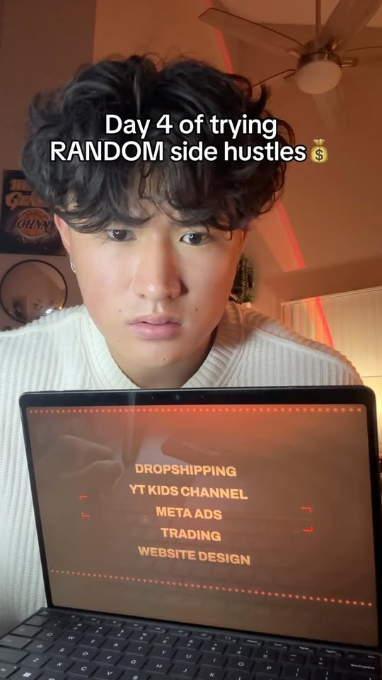
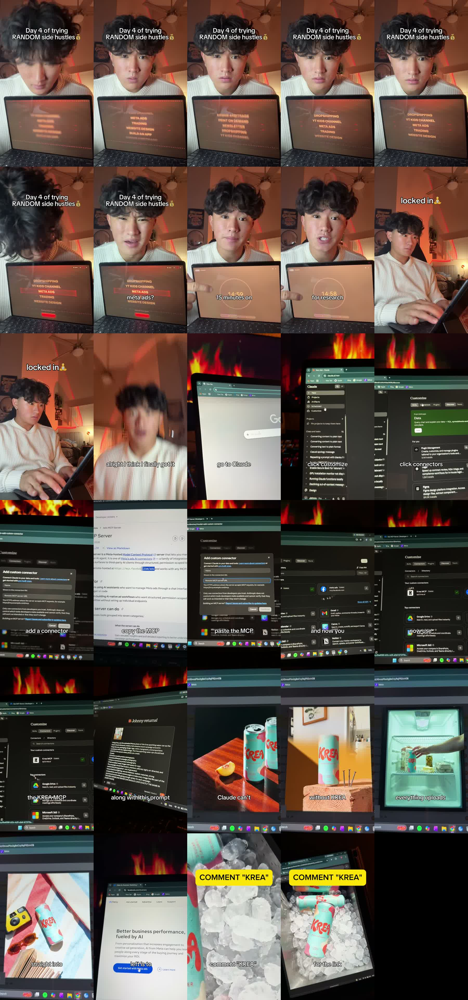

Facebook｜WithKat／Mae Krea／jschai.builds：Claude 串 Meta Ads MCP 與 Krea MCP 的對話式廣告素材工作流

一句話摘要
WithKat、Mae Krea 與 jschai.builds 這幾支同系列 Facebook Reel 都把三個已經成形的能力串在一起：Claude 的 remote MCP custom connectors、Meta 官方 Ads MCP server，以及 Krea 的創意生成 MCP。它代表廣告工作流正在從「手動開後台、匯出報表、另外做素材」走向「用 AI agent 在對話中讀取資料、生成素材、準備 campaign 草稿」。但短影音封面的「$10k/month」應視為創作者行銷標語，不是 Meta、Anthropic 或 Krea 的官方承諾。
來源脈絡
- Facebook 分享連結：https://www.facebook.com/share/r/19PQDpTXfU/?mibextid=wwXIfr
- Reel canonical：https://www.facebook.com/61593193388894/videos/looking-to-make-scroll-stopping-videos-fast-you-need-to-check-this-out-creating-/1557768659428569/
- 作者：WithKat
- Reel ID：1557768659428569
- 影片長度：約 21 秒
- yt-dlp 擷取觀看數：約 130,501；Facebook OpenGraph 顯示約 5,558 個心情、1,021 次分享
Reel 內容重點
影片流程大致為：
- 到 Claude。
- 進入 Customize / Connectors。
- 新增 custom connector。
- 從 Meta Developers 的 Ads MCP Server 文件複製遠端 MCP URL：`https://mcp.facebook.com/ads`。
- 在 Claude 連接器中貼上，完成 Meta Ads 連接。
- 再使用 Krea MCP，把產品圖與 prompt 丟進 Claude / Krea 生成廣告素材。
- 影片展示生成後的商品廣告視覺，並切到 Meta Ads Manager 找 campaign。
短影音逐字稿重點節錄：
> Go to Claude, click Customize, click Connectors, add a custom connector, click this link, copy the MCP, paste the link, and now you have Meta Ads. Now use the Krea MCP, drop your product along with this prompt... everything uploads straight into Meta Ads. All that's left is to find your campaign.


官方文件交叉驗證
### Meta Ads MCP Server
Meta Developers 文件說明，Ads MCP Server 是 Meta 託管的 Model Context Protocol server，可讓 AI agent 直接管理 Meta 廣告。它屬於 Meta ads AI connectors 的一部分，遠端託管於：
`https://mcp.facebook.com/ads`
文件列出的工具類別包含：完整分析報告、廣告建立流程和管理、目錄建立和管理、訊號和資料集、說明和疑難排解、A/B 測試和轉換提升研究、活動紀錄。
官方文件：
### Claude custom connectors / remote MCP
Claude Help Center 說明，custom connectors 可讓 Claude 連接 remote MCP servers；Free、Pro、Max、Team、Enterprise 都可用，但 Free users 限一個 custom connector。文件也提醒 custom connectors 可能連到非 Anthropic 驗證的服務，一旦連上，Claude 可能讀取或操作該服務資料，必須注意安全與隱私。
官方文件：
https://support.claude.com/en/articles/11175166-get-started-with-custom-connectors-using-remote-mcp
### Krea MCP
Krea 官網將 Krea MCP 定位為「All of Krea, inside your agent」，可把任意 AI agent 接到 Krea，在 Claude 等工作環境中生成圖片與影片。頁面提供 Claude 設定流程與 MCP URL：
Krea 官網：
為什麼值得收進 AI 學習雷達
- 這是 MCP 從開發者工具擴展到「廣告投放後台 + 創意素材生成」的具體案例。
- Meta Ads MCP 負責接商業後台與真實投放資料；Krea MCP 負責創意生產；Claude 則成為對話式 orchestration layer。
- 對代理商、電商、個人品牌與課程教學來說，這個案例很適合說明 AI agent 的下一階段價值：不是單點生成文案，而是把多個 SaaS 後台與創意工具串成可審核的工作流。
- 與 2026-07 已歸檔的「Meta Ads AI Connectors｜用 MCP 把廣告後台接進 Claude / ChatGPT 的官方路線」相呼應；本次新增的是 Krea MCP 生成商品素材與 Meta Ads campaign 準備之間的串接想像。
實務導入檢核表
- 先把 Meta Ads MCP 用在 read-only 報表、素材診斷、campaign 成效摘要，不要一開始就讓 AI 自動花錢。
- 若要建立 campaign，預設讓 AI 只產生草稿或暫停狀態，最後由人類確認預算、受眾、素材、落地頁與 tracking。
- 使用 Krea MCP 生成商品素材時，要建立品牌規範、禁用詞、授權素材與產品事實檢查流程。
- 不要把客戶 ad account、OAuth token、Business Manager 權限、未公開素材或報表貼進公開文章或不可信 MCP server。
- 每個 MCP connector 都應檢查：服務提供者、OAuth 權限、可執行工具、是否有寫入能力、是否可撤銷授權。
風險與限制
- Reel 中「Claude x Meta = $10k/month」是創作者封面標語，沒有官方文件支持它是保證收益。
- Meta Ads MCP 是否能建立、修改或發布廣告，取決於使用者授權、帳號權限、Meta 當下政策與工具可用性。
- Krea 生成素材仍需要品牌、法務與平台廣告政策審核；AI 生成圖片不等於可直接投放。
- 對企業與代理商來說，最安全的落地方式是「AI 建議與草稿 → 人工 approval → 系統執行」，而不是完全無人投放。
2026-09-06 補充：Mae Krea 的同系列 Reel
欒帥稍後分享的第二支 Facebook Reel 來自 Mae Krea，主題與前一支 WithKat Reel 高度重疊，都是「Claude + Meta Ads MCP + Krea MCP」的短影音教學，因此合併更新在同一篇條目中，避免 AI 學習雷達出現重複主題。
- 分享連結：https://www.facebook.com/share/r/1aAXWC9HZ4/?mibextid=wwXIfr
- Reel canonical：https://www.facebook.com/maeekrea/videos/claude-meta-print-method-is-here-boston-aitools-sidehustle-claude-kreapartner/1096078209655324/
- 作者：Mae Krea
- Reel ID：1096078209655324
- 影片長度：約 28 秒
- OpenGraph 顯示：約 8,363 次觀看、106 個心情；yt-dlp 擷取觀看數約 2,938（社群平台計數可能因快取與地區而不同）。
這支影片逐字稿再次確認流程：先在 Claude 的 Connectors / Custom Connector 貼上 Meta Ads MCP 連結，再進 Krea MCP 頁面複製 Krea URL，打開 Claude settings 後貼上 Krea MCP，最後把產品照片與 prompt 丟給 Claude / Krea 生成素材，並進入 Meta Ad Library / campaign 畫面示意投放準備。影片 CTA 是「Comment KREA」。


這次補充讓同一主題更明確：Krea 合作創作者正在把 `https://mcp.facebook.com/ads` 與 Krea MCP 包裝成一個面向創作者 / 小型商家的「廣告素材 → Meta campaign」捷徑。但核心判斷不變：可以視為很值得觀察的 MCP 商業化案例，不應把「print method」或「$10k/month」視為可驗證收益承諾。
2026-09-06 補充：jschai.builds「Day 4 random side hustles」同系列 Reel
欒帥接著分享的第三支同主題 Reel 來自 jschai.builds，包裝成「Day 4 of trying RANDOM side hustles」系列，先在多個 side hustle 選項中選到 Meta Ads，再示範 Claude + Meta Ads MCP + Krea MCP 的同一條路徑。因此這裡同樣合併在本條目，作為「Krea 合作創作者正在重複推廣此 MCP 廣告工作流」的第三個樣本。
- 分享連結：https://www.facebook.com/reel/1426712989347409
- Reel canonical：https://www.facebook.com/jchai.builds/videos/if-you-wanna-know-how-i-did-it-comment-krea-krea-sidehustle-metaads-college/1426712989347409/
- 作者：jschai.builds
- Reel ID：1426712989347409
- 影片長度：約 29 秒
- OpenGraph 顯示：約 3,916 次觀看、1,245 個心情；yt-dlp 擷取觀看數約 53,643（Facebook 計數常因快取、地區與端點而不同）。
- 貼文文字：`if you wanna know how I did it… comment KREA #krea #SideHustle #MetaAds #College`
這支影片的畫面與逐字稿再次確認相同流程：
- 進入 Claude。
- 點選 Customize。
- 進入 Connectors。
- 新增 custom connector。
- 從 Meta Developers Ads MCP Server 文件複製 MCP URL。
- 將 Meta Ads MCP 貼進 Claude。
- 在 Claude 連接器中使用 Krea MCP。
- 丟入產品圖與 prompt，產出 Krea 罐裝飲料的廣告素材。
- 畫面示意素材會進到 Meta Ads，最後只剩尋找 / 建立 campaign。
逐字稿節錄（Whisper 可能把 Claude / Krea 誤聽成 Cloud / create）：
> Go to Claude, click Customize, click Connectors, add a connector, click this link, copy the MCP, paste the MCP, and now you have Meta Ads. I use a Krea MCP, drop your product along with this prompt. Claude can't make these images without Krea. Everything uploads straight into Meta Ads, all that's left is a campaign. Comment KREA down below for the link and the prompt.


這個補充讓「Claude + Meta Ads MCP + Krea MCP」不只是單一創作者案例，而是形成一種社群化 side hustle 內容模板：用 MCP 把廣告投放後台與生成式素材工具包裝成低門檻、可留言領 prompt 的工作流。不過，這仍不代表能自動獲利或無風險投放；Meta ad account 權限、廣告政策、產品真實性、素材授權、預算控制與人工審核都不可省略。
原始連結
Facebook Reel（WithKat）：
https://www.facebook.com/reel/1557768659428569
Facebook Reel（Mae Krea）：
https://www.facebook.com/reel/1096078209655324
Facebook Reel（jschai.builds）：
https://www.facebook.com/reel/1426712989347409
Meta Ads MCP Server：
Claude custom connectors：
https://support.claude.com/en/articles/11175166-get-started-with-custom-connectors-using-remote-mcp
Krea：